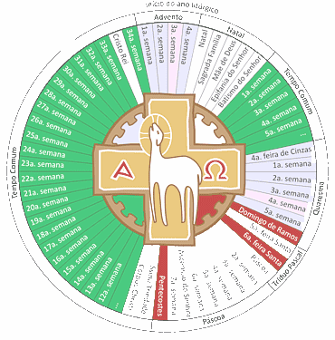

<!DOCTYPE html>
<html>
<head>
  <title>Santoral</title>
  <link rel="stylesheet" href="styles.css">
</head>
<body>
    <head> 
        <style> 
         body { background: linear-gradient(to bottom, #8254ca, #DBC9F5); margin: 0; height: 100vh;}
        </style> 
      </head> 
         </body> 
  <header>
    <section id="calendario">
        <h2>Calendario</h2>
        <p>Consulta nuestro calendario de eventos y celebraciones religiosas.</p>
        <a href="calendario.html">
          
          <h3>Ver calendario</h3>
        </a>
      </section>
    <h1>Página Web Cristiana</h1>
    <nav>
      <ul>
        <li><a href="https://www.santopedia.com/santoral">Calendario</a></li>
        </ul>
    </nav>
  </header>
</nav>
<section id="inicio">
    <a href="crist.html">
        <h3>Inicio</h3>
    </a>
   </section>

   <section id="santos">
    <a href="historia_santos.html">
        <h2>Historia de los Santos</h2>
      <h3>Ver más</h3>
    </a>
  </section>
  <section id="calendario">
    <a href="calendario.html">
      <h3>Calendario</h3>
    </a>
  </section>

  <footer>
    <p>&copy; 2023 Página Web Cristiana. Todos los derechos reservados.</p>
  </footer>